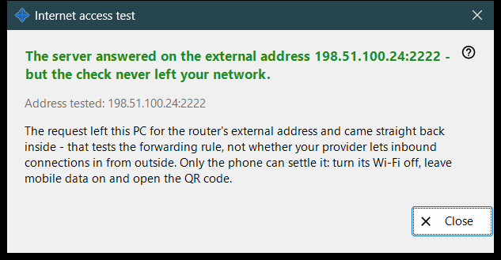
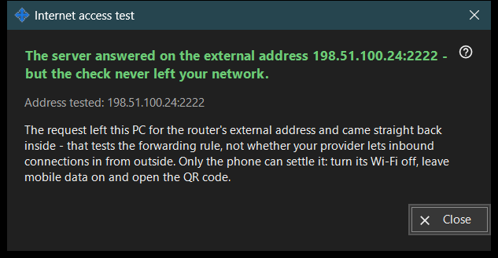

Internet access test
What this is for
Checks from this PC whether the shared address answers like an SFTP server. It opens from the 'Test internet access' button of the main window and shows the address it tests, a verdict and an explanation.


In this order
- Open the window; it shows the address and starts the check at once.
- Wait for the headline.
- Read the detail line under it.
- If the result is not conclusive, repeat the check from the phone with Wi-Fi off and mobile data on.
- Press 'Close'.
The elements
Address tested
'Address tested: ..' shows the host and port. While the check runs the window says 'Testing .. '. If no address is known the result is 'No internet address yet.'; a malformed one gives 'Invalid address.'.
Verdicts
'SFTP server reachable' - the port answered with an SFTP banner. 'Port open, but no SFTP reply' - something is listening on the port, but it is not our program; check that the router rule leads to this PC and to the share port. A connection closed before the answer may mean the connection limit; try again. No answer from this PC means the router may block its own address from inside.
Why a result may not be conclusive
The request leaves this PC for the router's external address and comes straight back inside, so it tests the forwarding rule and not whether the provider lets inbound connections in. Only the phone can settle it: turn its Wi-Fi off, leave mobile data on and open the QR code. If it still cannot connect, set up port forwarding with the 'How to set up internet access' button.
Manager settings · SFTP sharing settings · Exchange server settings